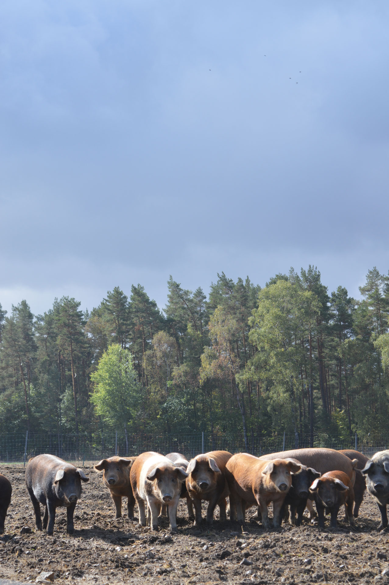
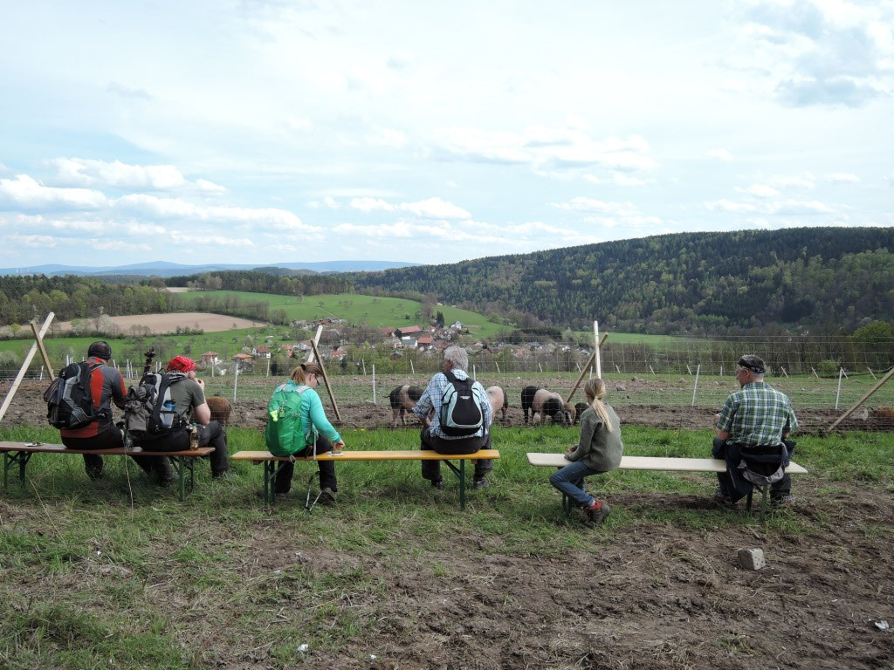
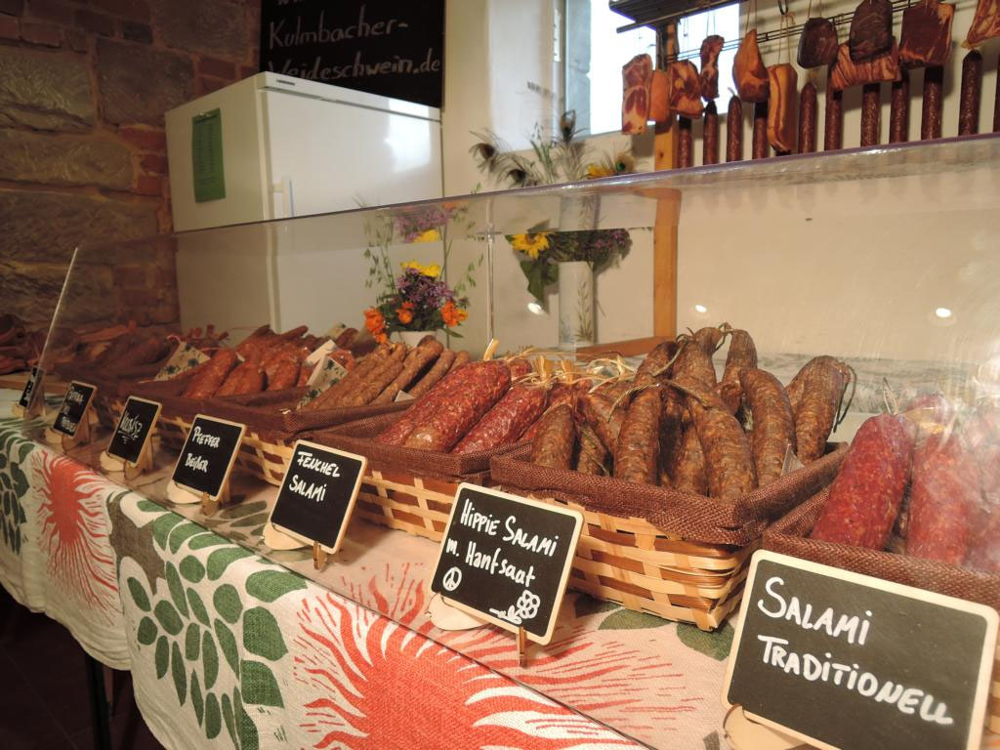
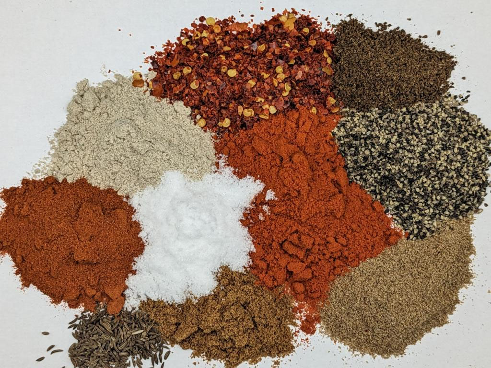
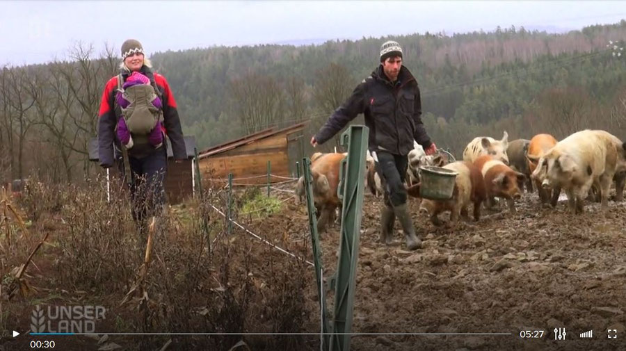
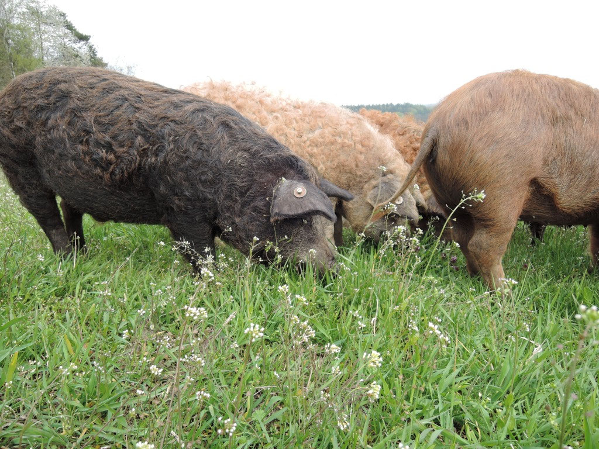
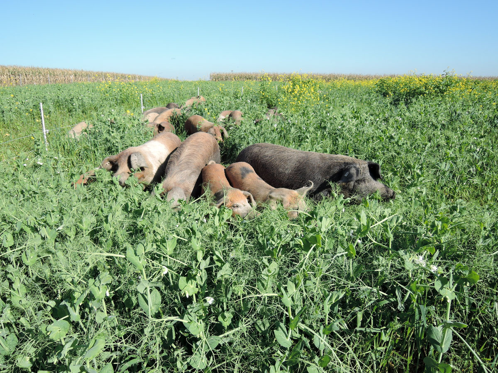
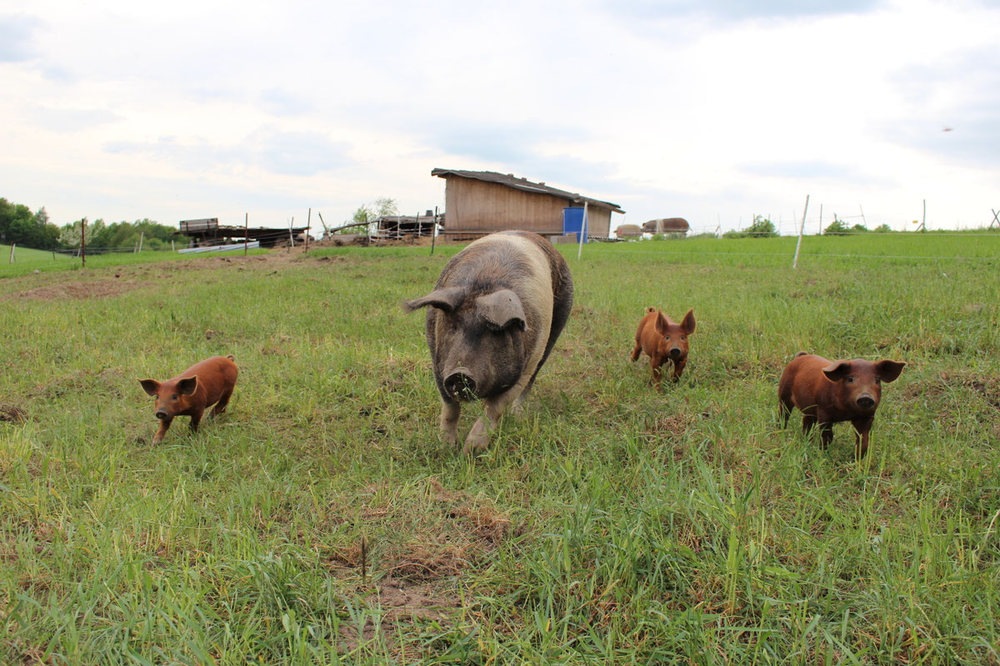

Kulmbacher Weideschwein · Eggenreuth bei Kulmbach
Glückliche Schweine
in Freilandhaltung
100% Freilandschweine – gutes Fleisch aus eigener Hofmetzgerei, im Hofladen oder bequem im Onlineshop mit Versand.
Kulmbacher Weideschwein
Glückliche Schweine. Gutes Fleisch.
Unsere Weideschweine leben ganzjährig im Freiland und haben genügend Fläche, um einer artgerechten Beschäftigung nachzugehen. Schutz vor Wind und Wetter finden sie in Hütten mit reichlich Stroh. Zusätzlich zum Getreide – sowohl frisch zum Selberernten als auch gequetscht – bekommen sie Gras, Kartoffeln und Futterrüben, Kürbisse, Eicheln und Nüsse. Eine ausgewogene Fütterung, viel Bewegung und besondere Rasseeigenschaften machen das Fleisch unserer Schweine zu einem ausgezeichneten Geschmackserlebnis.
100% Freilandhaltung
Ganzjährig draußen auf großzügigen Ackerflächen – mit Hütten, Stroh und Schlammsuhle.
Natürliche Fütterung
Kein Soja, kein Leistungsfutter, keine Antibiotika. Eiweiß aus Klee, Luzerne, Futtererbsen und Ackerbohnen.
Eigene Hofmetzgerei
Seit 2017 verarbeiten wir unsere Schweine mit unserem lokalen Metzger nach traditioneller Handwerkskunst.
Hofladen & Versand
Freitags 16–18 Uhr im Hofladen – Frischfleisch per Kühlbox auch zu Ihnen nach Hause.

Erlebnisbauernhof und tiergestützte Therapie in Kulmbach
Unser besonderes Anliegen ist es, unseren erlebnisorientierten Bauernhof und die damit verbundene regionale und nachhaltige Landwirtschaft sowie die Möglichkeiten der artgerechten Tierhaltung der breiten Öffentlichkeit zugänglich zu machen.
Bei den Kulmbacher Weideschweinen gibt es sowohl therapeutische als auch freizeitorientierte Angebote. Hierbei setzen wir eine Vielzahl traditioneller Bauernhof-Nutztiere ein – neben Schafen, Ziegen, Hühnern und Hasen kommen auch Ponys und Esel zum Einsatz. Natürlich gibt es auch Katzen und Hunde. Diese Angebote finden auf den umliegenden Wiesen und Feldern sowie in der Erlebnisscheune Kulmbach in Eggenreuth statt.
Gutes Fleisch vom Weideschwein im Hofladen oder online kaufen
Unser Hofladen ist Freitags von 16 bis 18 Uhr und in der Schlachtwoche Samstags von 10–13 Uhr geöffnet. Frischfleisch bitte unbedingt vorbestellen – am einfachsten über unseren Onlineshop.

Fleischverkauf im Hofladen und im Onlineshop mit Versand
Unser Hofladen befindet sich direkt neben unserer kleinen Landmetzgerei. Während der große Verkauf zum Ende der Schlachtwoche nur alle 6–8 Wochen stattfindet, kann der Hofladen jeden Freitag zwischen 16 und 18 Uhr besucht werden. Neben Salami, Schinken und Speck gibt es Wurst im Glas und meistens auch gefrorenes und fertig vakuumiertes Fleisch der vorherigen Schlachtung.
Für alle unsere Kunden von weiter her bieten wir den Versand unserer Produkte an. Frischfleisch versenden wir direkt nach der Schlachtwoche in einer Kühlbox – die Kühlkette wird dabei sichergestellt. Bei allem Frischfleisch, sowohl bei Abholung im Hofladen als auch bei Versand, bitten wir um Vorbestellung.

Eigene Metzgerei mit traditionellem Fleischerhandwerk
Um das Fleisch unserer glücklichen Freilandschweine nach eigenen Vorstellungen verarbeiten zu können, haben wir 2017 eine eigene kleine Hofmetzgerei gebaut. Dort verarbeiten wir die Schweine gemeinsam mit unserem lokalen Metzger nach traditioneller Handwerkskunst: Zerlegen, Portionieren und Wurstherstellen in aufwendiger Handarbeit. Die fein marmorierten Steaks und Schnitzel vom Weideschwein werden genau wie das Geschnetzelte von Hand geschnitten.
Die Gewürzmischungen für die Wurst stellen wir selbst aus Rohgewürzen her – ohne künstliche Geschmacksverstärker wie Glutamate. Unsere Räucherwaren wie Salami und Schinken werden wie in alten Zeiten viele Tage über Buchenholz geräuchert.

Das Weideschwein im Bayerischen Fernsehen
In der Sendung „Unser Land“ stellte der BR unsere glücklichen Schweine auf der Weide vor.

Die Fütterung der Kulmbacher Weideschweine
Zum jetzigen Zeitpunkt halten wir unsere Weideschweine in zwei verschiedenen Zuchtgruppen sowie einer großen Mastschweingruppe. Die Fütterung dieser großen Herde mit Tieren von 15 bis 200 kg und unterschiedlichsten Bedürfnissen war in den letzten Jahren eine der großen Herausforderungen. Inzwischen haben wir ein ausgeklügeltes System mit verschiedenen Eingängen zu den Futterplätzen entwickelt – dadurch bekommt jedes Weideschwein die richtige Menge vom passenden Futter.
Den Eiweißgehalt im Futter decken wir durch Klee, Luzerne, Futtererbsen und Ackerbohnen ab. Wir verwenden kein Soja, kein Leistungsfutter, und der präventive Einsatz von Medikamenten wie zum Beispiel Antibiotika ist bei uns nicht nötig.

Ganzjährige Freilandhaltung
Unsere glücklichen Weideschweine leben ganzjährig im Freiland auf großzügigen Ackerflächen. Da ihnen immer mehrere Hektar zur Verfügung stehen, haben sie rund um die Uhr die Möglichkeit, sich frei zu bewegen, zu rennen und zu wühlen und so einer artgerechten Beschäftigung nachzugehen. Zudem steht ihnen immer eine große Schlammsuhle zur Verfügung.
Um unseren Weideschweinen möglichst abwechslungsreiche Geschmackserlebnisse zu bieten, arbeiten wir mit Wechselweiden: Sobald die Schweine eine Fläche abgefressen und umgegraben haben, treiben wir sie auf eine neue Weide. Die bereits vorgeackerte Fläche bearbeiten wir anschließend mit dem Traktor nach und säen eine selbst zusammengestellte Mischung verschiedenster Saaten – neben der Schmackhaftigkeit für die Schweine liegt uns die Bodenverbesserung und Insektenfreundlichkeit besonders am Herzen.
Schutz vor Wind und Wetter finden unsere Freilandschweine in Hütten mit reichlich Stroh, können ihren Schlafplatz aber beliebig wählen. Während viele der Schweine im Sommer am liebsten in selbstgebauten Schlafkuhlen nächtigen, vergraben sie sich bei winterlicher Kälte gerne in den frischen Strohballen. Nur ein paar robuste Wollschweine sieht man auch im Winter draußen schlafen.

Zucht alter vom Aussterben bedrohter Schweinrassen mit besonderer Genetik
Lotta, unser altes Wollschwein, ist heute das einzige reine Mangaliza-Wollschwein bei uns auf dem Hof. Unsere Muttersauen sind sowohl reinrassig als auch Kreuzungen verschiedener alter und robuster Schweinerassen.
Während das Rotbunte Husumer, das Pata Negra Iberico und das Mangalica-Wollschwein mehr Fett haben, sind Deutsche Sattelschweine, Bunte Bentheimer Landschweine und Duroc magerer. Die Gemeinsamkeit dieser alten, teils vom Aussterben bedrohten Rassen sind ihre Robustheit, Stressresistenz und Gesundheit – und sie sind perfekt für die Freilandhaltung geeignet.
Die Würfe sind mit durchschnittlich 7 Ferkeln relativ klein, den Leistungsmöglichkeiten der Muttersau aber perfekt angepasst. So können die glücklichen Ferkel anstatt der üblichen 3–4 Wochen bei uns 8–10 Wochen bei der Mutter bleiben. Die längere Säugezeit bringt für die Ferkel viele Vorteile mit sich – allen voran gute Gesundheit, Robustheit und ein ausgeglichenes Sozialverhalten.
Galerie
Einblicke in das Leben unserer Weideschweine – Sommer wie Winter.
Regionale, nachhaltige Landwirtschaft
Wir wirtschaften regional und nachhaltig auf unseren Flächen rund um Kulmbach – mit Wechselweiden, eigenen Saatenmischungen und Bodenverbesserung im Blick.
Artgerechte Tierhaltung, das ganze Jahr
Unsere Schweine leben ganzjährig im Freiland – mit Hütten, Stroh, Schlammsuhle und viel Platz zum Wühlen, Rennen und Entdecken.
Fleisch in Hofmetzgerei-Qualität
Seit 2017 verarbeiten wir in unserer eigenen Hofmetzgerei nach traditionellem Fleischerhandwerk – ohne künstliche Geschmacksverstärker, geräuchert über Buchenholz.
Bilder & Videos direkt vom Hof
Weideschwein WhatsApp: 015206188828 – speichern Sie unsere Nummer und schicken Sie uns ein „Hallo“ per WhatsApp.